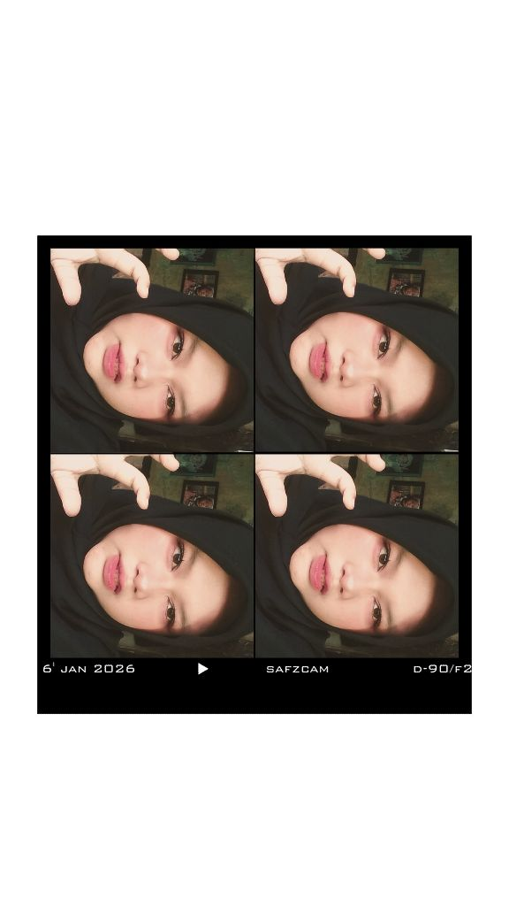

Welcome to My Personal Website!

♡ Student | Dreamer | Future Professional ♡
Halo! 👋🏻👋🏻 Perkenalkan, nama saya Jois Swan Fitria, biasa dipanggil Jois. Saya lahir di Bantul, 12 Oktober 2008, dan sekarang saya tinggal di Bantul juga.
Secara personal, saya adalah orang yang senang belajar hal baru, cukup fleksibel dalam menghadapi lingkungan baru, dan selalu berusaha menyelesaikan apa yang sudah saya mulai dengan sebaik mungkin.
Bagi saya, komunikasi dan kerja sama yang baik itu penting, baik dalam kehidupan sehari-hari maupun saat bekerja kelompok. Fokus saya saat ini adalah terus mengembangkan potensi diri, mengasah skill baru, serta mencari banyak pengalaman positif untuk bekal masa depan.
Menjadi seorang profesional yang sukses dan ahli di bidang yang saya tekuni, serta memiliki karier yang stabil dan mapan di masa depan.
! Kembali ke Menu"Sukses itu bukan cuma soal pintar, tetapi tentang siapa yang konsisten berusaha, mau belajar dari kesalahan, dan tidak gampang menyerah."↑ Kembali ke Menu
| No | Jenjang | Nama Institusi | Tahun |
|---|---|---|---|
| 1 | TK | TK PKK 28 Aromulyo | 2013-2014 |
| 2 | SD | SD N 1 Pedes | 2014-2020 |
| 3 | SMP | SMP N 2 Sentolo | 2020-2023 |
| 4 | SMA | SMA N 1 Sedayu | 2023-2026 |
| 5 | KULIAH | STMIK EL RAHMA | 2026-Sekarang |
Made with love by Jois 🎀
© 2026 Jois Swan Fitria